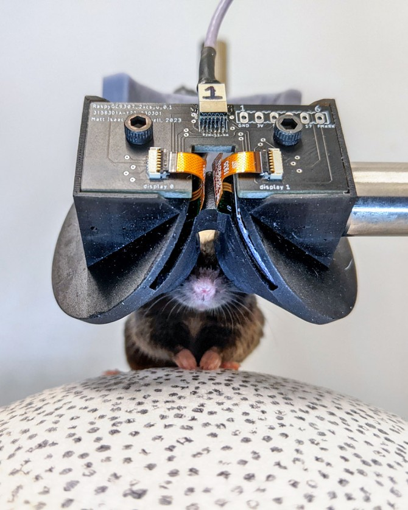
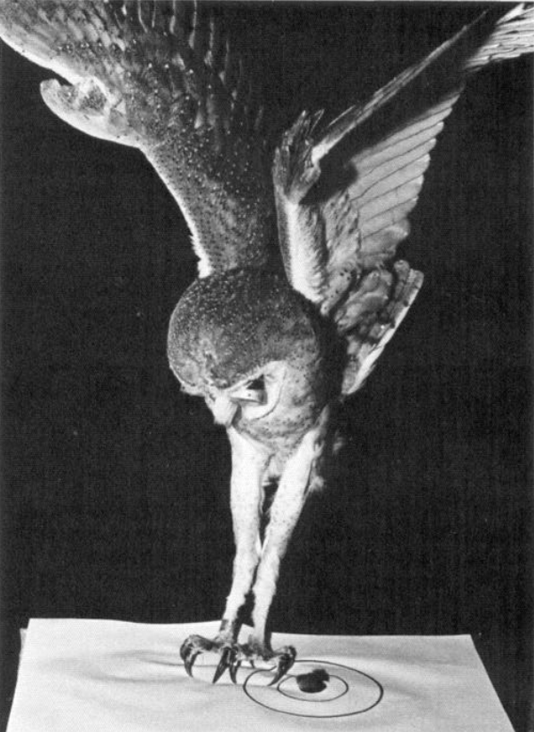

During 2025-06-10–2025-06-12, the Reproductive Frontiers Summit (ReproFro) convention was hosted in Berkeley. Gwern invited me to the afterparty in Lighthaven, so I went.
I wore my serious-business-dress and carried around Behavioral Neurobiology: An integrative approach (Zupanc 2018). Not to read it, but as a comfort object.
US Constitution
“… so Bismarck Analysis produces geopolitical analysis subscribed to by billionaires. They have made some seriously wrong analysis, like the one about the Russian military being modernized enough to win wars, but generally pretty good quality.”
“Why would billionaires need geopolitical analysis?”
“Geopolitical analysis is useful because there are some rare events that could be very important. For example, is it likely that the US would become like Turkey, with Erdogan? So Turkey was a democracy, but Erdogan just took it over step by step, with the media, the newspapers, and the government apparatuses. So a rich person would very well ask, ‘How would this or that country be like in 10 years?’ and decide where they would want to move their money and home to. And when you are planning ahead like that, the question of whether the US democracy is stable is very relevant. It’s not saying they are usually right. For example, they produced a report that says that Russian military had been successfully modernized, and that its bureaucracy wasn’t rampantly corrupt. Then Ukraine war happened and we see it was wrong. Still, when it’s wrong, it’s usually interesting, and they did get some things right.”
“So you mean… Trump might become the president again and ignore the term limit?”
“No, there’s a way to do it ‘legally’ even though not in spirit. He could switch with Vance.”
“The Putin and Medvedev trick?”
“Not that one. The Putin–Medvedev system probably inspired Erdogan’s taking of power. But no. It’s that the US constitution prohibits president to be ‘elected’ for 3 times. But Vance could get elected with Trump as vice president, then immediately resign. It would certainly be very contentious, but it does not violate the constitution in letters.”
“I see. It is certainly way more useful to them than to the keyboard warriors or ‘political scientists’ on twitter.”
“Well, geopolitical analysis is also useful to the ‘political scientists’ as an identity utility. Some have billions of dollars to protect, and some their self-identity.”
“The gay marriage was actually done by a legal hack. The proper way to do it would be to amend the constitution, but that’d never work now.”
“I thought it went through a slightly wider interpretation of the Equal Rights Amendment?”
“Not really. It never passed.”
“What? Didn’t it… [furiously checks phone] I’ve been lied to.”
“Apparently some Democrats just acted as if it has passed, and act accordingly. It is a form of realpolitik, because even though it didn’t pass in form, it passed in spirit, because it ‘should have passed’, and if they legislate accordingly, eventually enough laws would come into being that the legal landscape would look just as if the amendment had really passed.”
“There is that phrase ‘constitutional hardball’ (Tushnet 2003), it is a good description of what the US government has come to. The idea is that there is a positive feedback. As the president becomes more powerful, to make anything happen in the government, you’d have to go through the president, so the stakes become higher. And because the stakes are higher, as soon as your party gets a president in the White House, you try to really push it, to get your policy in, your people in, because you might never get a chance later. And laws get broken in spirit if not in letter. And when the other party takes power, they push further. And because this pushing needs to go through the president, the power of the president often gets increased as a side effect, or an instrumental goal of the pushing. So the power of the president just keeps ratcheting up.”
“The US constitution actually sucks. You see that all the modern countries like Latin America or African countries that copied the US presidential system, pretty soon they fall into a dictatorship or an ‘imperial democracy’. All those examples goes to show that the US constitution is simply not built for a modern industrial country. So the US no longer tries to export its democratic model, and suggests the parliamentary model instead. If you look at the European countries, you see that the model is very stable, more than the American one.” (Linz 1990)
“Ha, guess constitutional originalism would never work.” Verily, Shenanigans beget shenanigans.
“Like if you look at the original constitution, the president had very limited powers. It and the federal government were almost ceremonial in a way. Most of the powers were in the states. It was designed for a small agrarian society.”
“–In Germany the president is still like that.”
“I thought Germany has only a prime minister.” Technically, it is called a Chancellor, but they are just two names for the same job.
“Oh, there really is a president. Not elected, but appointed. He doesn’t do much really.”1
1 Technically, the German president is elected by a vote of the Bundestag (the lower house of the German parliament) plus some local parliament delegates, but it is a low-stakes low-drama event, unlike the American president election. It is similar in mechanism to the American electoral college. Guess this is what the founding fathers intended America to be like.
“Yeah, ceremonial probably. Like the Belgian king.”
“–There is a king in Belgium?”
“Yeah there is. Even the Belgians probably forgot about him.”
“There hasn’t been a substantial update to the constitution since like 100 years ago. The constitution was never built for the modern America, so huge and powerful and with diverse interests, and it’s probably too late to substantially update it, because any substantial update would simply be shot down, because of constitutional hardball. We are kind of like in the late Roman Republic period. In the long run this is going to become an empire.”
“So there was this story about Kurt Gödel. When he was going to become an American citizen, he was studying the constitution, and discovered that there was a loophole in the constitution, which can turn it from a democracy into a dictatorship.”
“Well, nobody knows what the loophole was, but the point is that there are just so many loopholes that it doesn’t take a Gödel to find it. It just takes someone who is capable of bypassing the norms and following the letters and playing hardball for power.”
Demand for reproductive technologies
“I’m kind of surprised that Sam Altman has a child now. I would have expected that with their expectation of some probability of doom, it’d be better to wait a few years and see before deciding.”
“Peter Thiel has two adopted children, so there is not a problem with deciding whether to create more people. Also, he does not believe in AGI, so that’s not a problem for him.”
“Another way to think of it is like. If a child gets run over by a car at 10 years old, it sucks, but it is still a net positive if you add it up. Similarly for near-term AGI doom.”
“The people who would be like ‘I can’t have children now because of AGI’ are the same kind of people who would be also saying ‘I can’t have children now because of climate change’ or ‘I can’t have children now because of systemic racism’ or some other thing. It’s post hoc rationalization. People are not good at judging some things about themselves. In fact, if I offer some kind of rationalization like this, you should not believe me!”
“What can you believe about yourself, though?”
“Well, I can’t possibly believe that I should not believe everything.”
“Interestingly, it is consistent for us to believe that ‘You should not believe anything you believe in.’ but it is not consistent for you to believe that!”
“And now I’m thinking about something Smullyan would say, like ‘whether I can believe that I believe in believing myself…’ hmm.”
“Ahem, sir. The liar’s paradox is [traffic police stop gesture] strictly prohibited on this venue.”
“It is also why the Nobel laureate sperm bank didn’t do well. Other than the lack of donors, there is also the lack of demand. Parents just seem less interested in intelligence than heredity, and would gladly have a kid with 5 IQ points lower if it is ‘theirs’. And also why infertile parents don’t usually adopt.”
“Of course, there is also the fact that adopted children have way more psychological problems.”
“People often say things like ‘he has your eyes’ and things like that. If you ask them pointedly they might say it is a bit silly and not a big deal, but if you look at what people do, instead of what they say, we can find their implied preferences, and it shows people really care about their children having copied a lot of their own genomic content”
“How much money would they pay to have it? Must be in the 10000s range… There should be an economic paper about the shadow price of consanguinity.”
“There needs to be better IVF success rates. There needs better sequencing. There needs to be very detailed understanding of how germ cells work if we ever want to create germ cells from somatic cells, which many gay people want. This is good for the superbabies project of course, that there are enough gay billionaires that they would put serious money into funding reprogenetics.”
“I disagree with <speaker name I forgot>, about the male de novo germline mutations mattering. He thinks it matter a lot that older fathers pass on more mutations, but I don’t think so. Every year, the extra de novo mutation is maybe 10 bases? And that just is too small compared to all the other forces of selection.”
“Should one freeze sperms if one worries about it?”
“It certainly has some value, but one must think on the margins. It’s not ‘Is it worth it to freeze sperm at this price?’ but ‘Is it worth it to freeze sperm using the money I could spend on other things, like searching for mates more quickly?’.”
“It actually costs a lot to freeze sperm, but it shouldn’t be.”
“How much?”
“About $1000/year?”
“What! But liquid nitrogen costs a few dollars a tank. And as a reference class, the livestock breeders already keep a lot of sperms cheaply.”
“Yeah, but in humans there is not an economy of scale yet, so we get a market only selling to people that really want it, so it’s super expensive. But the material price is really next to nothing. A tube of sperm is about the size of a drinking straw, and so many could be kept in the same tank. All the fees would be in administrative and record keeping costs.”
AlphaEverything
“… and I’m trying to train a genome sequence model with HyenaDNA.”
“Hyena… DNA? Do you mean hyena the animal, or hyena the neural network architecture?”
“… Biologists are not interested in scaling. I am trying to scale-pill the biologists.”
“But biologists do love scaling! In fact, there is bioinformatics, which is basically big data for biology. They can generate so much data. They can get terabytes of data just from a cup of river water and doing a pangenomic sequencing.”
“But still many biologists are very focused on understanding deeply a little thing, and are not thinking about scaling issues, and what problems can be solved with more scale.”
“For years, biologists have thought that there was not enough data to solve protein folding. But then AlphaFold came along and showed that they were wrong. There was already enough data. It just required a good model to learn from all the data.”
“AlphaBrain! It should work better than whatever the Human Brain Project has been doing.”
“So people say that fast takeoff is unlikely in certain areas like biology or physics, because you still have to do all the experiments, and you can’t Moore’s law on chemical reaction rates. That’s true, but you can be better at picking what experiments to run. A smarter AI could think through the experiments and pick the most informative one to perform. They could be more sample efficient than human researchers. In fact, I try to tell researchers to think bigger. They have so much data, they just need to use them. A biological lab could generate so much data. Feed them all into a total AlphaLab model to predict everything about the lab as a sequence prediction task: predict the experiment runs, the next experiment that would be run, the genome sequence that would come out when this sample is put into a sequencer, the next visitor to the lab… everything!”
“AlphaEverything! AlphaPhysics, AlphaChemistry… Maybe this happens a lot. Maybe there are massive sample inefficiencies in many fields. Physics is stagnating, but perhaps we already have enough data to decide which cosmological model is right, if only we are smart enough to interpret at the data.”
“Maybe physics is hard because data is expensive and there are so many models, especially in high energy physics and cosmology. So it’s hard to pick the right model with data. Maybe the physicists are doing as well as they could.”
“But how do you prove it? How do you know that you have truly did as well as the data allows?”
“Heritability estimates for height is 0.8, measured by monozygotic twin studies. and that sets a hard upper bound on how much you could possibly get out of genetic data. One can take a statistical model that predicts height based on the gene sequence, and if it predicts 0.4 of the variability of height, then they could point at it and say that they have gotten 50% of the theoretical upper bound, and no genetic predictor of height could possibly do better than twice of their model.
“So that’s my challenge: Is there a way to estimate an upper bound on how much information could possibly be extracted out of the data we have?”
The group thought about it a bit, but finally relented without any ideas.
Japan
“So I did go to Nagasaki and I think it’s the best place to visit in Japan.”
“Why? Not Kyoto or?”
“Kyoto is too designed for tourism. Nagasaki shows the most standard kind of Japan. It’s like a typical Japanese city, so it allows you to get a better view of Japan – Japan as seen by Japanese – than Kyoto.”
“And Tokyo is basically a city state, a different country.”
“So there were two things that were most interesting to me in Nagasaki. One was the atomic bomb museum. Near Ground Zero was a Catholic church, so there were melted rosemary beads there.”
“I went to the Las Vegas atomic bomb museum, and it is really great. There were also a few items sent in by the Japanese. It was just subtly accusatory. Like it never says out loud, but it implies the blame on America. But no mention of Japanese invasion. Like none of the items was false, but the omission, of what is not highlighted, is significant.”
“Another interesting thing in Nagasaki was the Dutch Slope [オランダ坂].”
“You mean the Dutch island?”
“No, the Dutch Slope, a sloped ground [gestures with hand], where many buildings were built up by Japanese craftsmen in the ‘Dutch style’. You know that Chinatowns in America are basically built by Americans who had never been to China? The Dutch Slope is basically built by Japanese who had never been to Holland.”
Anime
“Yeah, like I have never been to Japan. I know, it’s the most ungwernlike thing. Somehow even the LLMs assume that I have visited Japan. One of them even hallucinated an entire Gwern essay about ‘My visit to the Ghibli Museum’.”
“There is a Ghibli museum?”
“Yes. Actually that is an interesting thing. It was designed by the son of Miyazaki, and the park is great. He is a good architect, but a horrible movie director. The conspiracy theory is that Hayao Miyazaki keeps allowing him to direct movies to make up for being an absent father.”
“Or maybe because they don’t have anything better to do. You know. Many great scientists have children whose only notable achievement was editing their parents’ collected works.”
“But he was a great architect. He also designed the Ghibli Park. And you know what is great about it is that it is very subtle. It’s not like something … Disneyland. It is not in your face. It’s hard to even find it from the outside. But if you are there, everything is just very Ghibli. They would take this or that building from the movies and replicate it exactly in the park, but in a functional way so that it also makes sense as a real building that someone might use functionally. It is hard to explain except by being there.”
“Miyazaki is clearly mistaken about his interpretation of The Boy and the Heron. He is obviously the wizard uncle, even though he claims he is the boy. So everyone just agrees that Miyazaki is wrongly interpreting Miyazaki here.”
“Self-transparency in shambles. The opacity of mind strikes again.”
“Why is Isekai suddenly so popular now? Probably just a random fashion.”
“More and more of animes are coming out of Japan with a backdrop of declining civilization and depopulation. But the authors don’t even put it on the upfront, or point at it as if it is a special thing. It was kind of just a subdued unremarkable thing to assume! It is probably hard to understand to a country with a rising economy though, and we would think it’s an artistic choice, but it’s probably because it’s realistic for them. There are whole towns in Japan with all the infrastructure, but without people to use or maintain them.”
“So there was this anime, Girls’ Last Tour, and it was about two girls traveling in a postapocalyptic landscape, and they were probably the last humans alive–”
“–That’s not true! There was a man drawing maps [カナザワ].”
“It was heavily implied that he died shortly afterwards, and at the ending, as they climbed to the top of the building, snow began to fall, and it was heavily implied that they too would die soon. Everything is so meaningless. There is nothing left to do but to kill time and then die. It shows that everything we do is assumed as if it is done for someone else to notice, and nothing is worth doing if it has no effects on anyone but oneself. There were robots that still did things. There were great monuments. But it was a Disneyland without children (Bostrom 2014)… Do you watch anime? It’s a good anime.”
“I don’t watch anime… I watched Girls Last Tour, and Lain.”
“Lain is a good one.”
“I don’t read manga either… I read Qualia the Purple, because one of your newsletters recommended it. It was bad.”
“Oh no, is it?”
“The first 1/3 was good, but then the quality dropped off.”
“That’s too bad. I didn’t finish reading it. It’s in the backburner as in, if I don’t have anything else to read, I’d read that, but I always have had something else to read.”
“Well you can take it off the backburner now!”
Bumbling around Lighthaven
We went bumbling around Lighthaven, looking for Steve Hsu, but he was nowhere to be found. But we did note amusing things at Lighthaven.
“In Lighthaven there is a podcast room. It just has 5 cameras running 24/7. The storage space is about 1 TB per day.2 People could just go in and start talking spontaneously, and when they get back they can email Lighthaven for a video, and they would just cut out the relevant segments and send to them. And there’s your podcast!”
2 If we assume 1 TB per day per 5 cameras, this translates to 18.5 mbps, or the standard bitrate of 1440p at 30 fps.

“Very smart. Every conference venue should have such a room. Pick-up podcasting.”
“I know that storage is cheap enough now that this is fine, but it always just sounds crazy to me that this is possible now…”
“Now 100 TB of storage only costs like 1000 dollars.”
“Yes. And audio is more important than video for podcasts, so they could use higher compression for videos. Still, my intuitions were formed in the past, so it still sounds crazy to me on an emotional level. Also, they use a wired cable connection to the storage unit, which is 8 times faster than wifi. And they only keep the video stored for maybe a month, so it doesn’t cost that much.”
In a conference room, we saw a world map of power lines, created by Mapographics.
“I wonder what that straight line near South America is…”
“West Australia is gone, but North Korea is visible.”
“I wonder when this map was created. China ought to have a lot more of the power lines?”
At home, I tried figuring it out, but neither o3 nor I could figure it out. It doesn’t look like anything at all, not even undersea cables. The strangest part is that one of the special points is just around 56°W 15°N, but absolutely nothing is there. It is just an empty stretch of ocean with no land nearby. It is possibly a fake pattern designed as a no-tech copyright device.
“I call this ‘Chesterton’s fence’, well it’s actually a vehicle gate, but it works well as a joke.”
“I call this ‘Chesterton’s joke’. If you can’t explain why it has been told, you are not allowed to say it is a dumb joke.”
There was a translucent inflatable geodesic igloo made of some soft plastic material. There were beanbags inside, and on the doorway there was a rectangular board with 1 written on it.
Theatric violence
Two men suddenly began fighting with foam swords.
“That person I knew in the past was interested in HEMA. Glad to see he is still at it.”
“Though they are using single-handed swords. To be more accurate for HEMA, they would usually also have a buckler or a dagger. It allows [crosses arms in demonstration] catching the sword.”
A few minutes later, they had collapsed to the ground and were writhing like mating snakes.
I pointed. “Looks like they aren’t doing HEMA now.”
“Oh that is perfectly normal HEMA. The goal would usually be to pin down the opponent, and it usually means fighting on the ground. After all, it was supposed to be used in life-or-death fights, so it doesn’t matter if it looks ugly. It’s not like fencing, which is completely ceremonial and impractical.”
Suddenly, the group looked up as if a legendary figure was approaching. It turned out that during the Manifest conference, he broke the right arm of Henri Lemoine, and people couldn’t stop cracking jokes about arm misalignment. There was a lot of ironic hypermasculine posturing, like “My testosterone levels would kill lesser men.” and “If I were a gorilla, I would be feeling my silver hair [hand plucking down the spine] so hard.”.
Someone asked who won the arm wrestling match, and it turned out it was cancelled.
“Didn’t they say there would be a left-arm wresting match?” Note: this was a joke.
“I voluntarily left the match.”
“Wise move. So you could retire undefeated.”
“The masculine urge to start a Fight Club. Where you can have good clean fights. Losing in a good clean way is still better than winning in lame ambiguous ‘fights’.”
“Guys literally only want one thing and it’s a good clean win or loss.”
Sample efficiency of biological organisms
“There is a common criticism about deep learning, which is that they are wildly inefficient. Like how humans can see a few examples and learn a category, while they need to see 100s of examples. But the problem is that they are comparing adult humans with the neural networks. And the adult humans come with a lot of experience and learning already. What if we try to compare them holding the amount of training data equal?”
“There was this experiment where they raised chicken in a VR box, so that everything the chicken saw was recorded and designed. They also tracked the chicken’s eyes so that they knew exactly what the chicken saw. Then they trained a convolutional neural network to . It turned out to perform comparatively with the chicken in psychophysical experiments of discrimination.”
“And I thought The Truman Show was just a movie!”
“There was also an experiment where people kept track of everything seen and heard by a baby, and then trained a neural network on it. It did surprisingly well, and could do language about at the same level of a baby at the same age. So all that talk about how deep learning is very sample inefficient, when people actually get some data to test it, the hypothesis might actually not hold up?”
“There was also that RL experiment (Dubey et al. 2018) that shows just what happens if we give humans a ‘level playing field’ with the AI. So what they did was, to randomly change all the sprites in a platforming game, so that you can’t rely on all the prior knowledge you have about what everything ‘should’ look like in a game. And they have a website where you can play interactive versions of the games with more and more prior knowledge removed. I spent some time playing them and it gave me [strident voice to simulate suffering] psychic pain to play. I was like ‘This is so hard! Is this what it’s like to be an RL agent?’.”
Note that the RL agent in the paper they used still took ~10 million steps to win the game. This compares badly with the ~2 minutes for the easiest example, or ~20 minutes taken for a human to beat the hardest level. But it was 2018, so perhaps RL agents have gotten a lot better since then?
I read some papers around this.
- Moculus and MouseGoggles: A Full-Dive VR system for mice. It contains a pair of VR goggles, a treadmill-ball, a sugary liquid lick for reward delivery, head clamp, pupil tracking, and two-photon imaging. It’s too new to be cited yet, but it should be possible to use it to gather data and train a “digital twin” RL agent of a mouse, in the same style as the following paper, which trained digital twins for chickens.
- Parallel development of object recognition in newborn chicks and deep neural networks: Chicks were hatched in darkness, then raised singly in automated controlled-rearing chambers that measured each chick’s behavior continuously for 14 days. The chamber had 4 LCD screens. In the 1th week (the imprinting window), one screen displayed a single 3D object rotating back and forth in a 60° range. During testing phase, the chicks were tested for binary choice between two static views of 2 objects, one of which is the imprinted object in a novel view angle. They also simulated a digital chicken in Unity game engine to generate 10K images with which they trained CNNs by self-supervision, then tested them for the same novel-view binary-choice experiment by training a linear classifier on top (that is, testing for linear separability of object representations). They reached the same performance level (70% correct) as the chicks. There was a lot more to this paper, but I didn’t read further, though I feel like it’d be more convincing if they did not use the linear classifier, and used nearest neighbors instead at the testing phase.

The human evidence is notably weaker, probably due to the difficulty of human experiments.
- SAYCam dataset: 415 hours of naturalistic, longitudinal recordings from 3 children during their 0.5–2.5 years old period.
- Learning high-level visual representations from a child’s perspective without strong inductive biases: Trained embedding and generative models on 472 hours of video (5 fps) from the SAYCam dataset by self-supervised learning. Used ViT to minimize inductive bias. Frozen embedding model allowed okay performance on ImageNet classification with a linear head. Generative model (VQGAN) could reconstruct images from the data and they looked good. No comparison with human performance.
- Grounded language acquisition through the eyes and ears of a single child: Trained a vision-language model by CLIP-training with a small subset of SAYCam of 600K video frames (61 hr) paired with 37.5K transcribed utterances. The trained model could match object images and words, and generalized to out-of-distribution images. No comparison with human performance.
- Predicting the birth of a spoken word: Recording of a typical male child from birth to the age of 3 y, of ~10 hr/day, totalling ≥200,000 hr. Manually transcribed ∼8 million words (2 million utterances) of both child speech and child-available speech by caregiver. The dataset is private and seems exclusive to only that one research team, so I expect it to have no future relevance.
Neuroplasticity
“Have you ever went to the Exploratorium? It was actually opened by Oppenheimer’s brother, and it had the first interactive expositions. And that model is copied across the world in other science museums.”
“It’s certainly a better legacy than the atomic bomb.”
“At the Exploratorium there was a demonstration of this effect. You wear those goggles and everything you see is tilted to the right by 15°, and then you try to toss a basketball to a hoop. Then you would always shoot to the left. It takes about 20 tries before you adapt to the change, then you take it off, and now you always shoot to the right, and it takes about 20 tries before you adapt back.”
“I always think of that as a kind of temporary adaptation in the neural activities. As soon as that experience ‘leaves your context window’, your adaptation ends. It is like in-context learning in Transformers. It will always be slower and less fluid than true adaptation in the neural weights.”
“There were some crazy psychologists who actually wore inversion goggles that turned everything upside down for a month, and they did end up acting basically as fluidly as if they are not wearing the goggles.”
“Yeah, at that time scale, it was probably enough to cause real changes in the neural weights in the brain.”
“Some animal psychologists have done the same with birds. They would strap the deflection goggles to the birds. The barn owls could kind of adapt? But the chickens could never adapt. They would always be pecking [pecking motion with a chevuoi hand] to the side, and would literally starve to death without help.” (Hess 1956; Knudsen and Knudsen 1989)

“Not sure what to make of this though. I wouldn’t read too much into it. I mean, you don’t get deflection goggles strapped to the eyes in the wild, so being able to adapt to that would be pretty useless.”
“But humans can do it.”
“Just barely. It is probably a side effect of general learning mechanisms in the brain.”
“Or as an adaptation to losing one eye. That certainly used to happen commonly in the wild.”
Bird brains are superior
“Bird brains are superior in every way. They can do the same thing but at a small size. I mean, the scaling curves have roughly the same exponent, but the constant is different. It seems they are just better by a constant factor. Ravens have societies. They use tools. They have teaching. They can transmit culture across generations and societies. The more we test them, the more they seem to be at the level of primate intelligence, and the more frighteningly close that they seem to be on the cusp of civilization. And it seems like a very contingent thing now, that it was primates, not birds, that created the first technological civilization.
Birds have one big disadvantage, and it is that flying is a horrible way to move. It costs so much energy, which forces them to be lightweight, and shrink their brains. Indeed, birds that expend more energy flying tend to have smaller brains (Shiomi 2022). if the earth atmosphere had been thicker…
Evolutionarily, humans arose out of primates scavenging on the African savannah, sucking up bone marrows of the fresh kills (Blumenschine and Cavallo 1992; Thompson et al. 2019). And it was a lucky break that the environment had been just rich enough for rewarding bigger brains. And walking is better than flying for this. Walking with a bigger brain is no big deal, but flying with a bigger brain… [gestures a bird plummeting head-down]”
“How about walking birds, like dodoes, who are not known for their intelligence?”
“Well there is the small island population effect, and the lack of predators, both of which makes intelligence less likely. And they could be competing on something entirely different from intelligence, like having the hardest beak for cracking nuts.”
“Oh, how about the cassowaries?”
“They are too evolutionarily distant from most of the common birds you would be thinking of, like ravens. So their brains probably wouldn’t be comparable.”
Supercats Conference
Cats are not acceptable cats. They can be much better.
— Gwern, Are Cats Domesticated?
“If this conference is the ‘Superbabies Conference’ then the next conference should be the ‘Supercats Conference’!”
Someone asked Gwern to tell them the theory of cat tail again, and he obliged.
“Hey – that explains the mystery of octopus intelligence! Biologists have long puzzled about what octopus intelligence is for. What is it for? They aren’t social like humans or ravens. But maybe they actually are social! Each octopus is already a 9-member society.”
“New uplifting idea: just give cats more tails.”
“New theory. In Old Japanese legend, a cat or kitsune gains a tail every 100 years, and after gaining 9 tails, they become gods. Now this explains why. With 9 tails, they become superintelligences.”
“Oh there are always more ways to improve cats, it’s just people are annoyingly uninterested in creating better cats. More people would keep cats if there is less allergies.”
“Apparently cats can eat something [Purina Pro Plan] that makes them hypoallergic. So more people could keep cats without the allergy. Amazon reviews are pretty good, so people are discovering it spontaneously.”
“Cat secretes a certain chemical which causes allergies. And we have no idea whether it has any functions. Cats have wide variability in it, and some having basically no such allergen is just fine in terms of health. More recently there had been gene-edited cats so they don’t produce that allergen, and it still seems to have no ill effects. So apparently it is useless for them as far as we can tell. So it is quite possible that we could get allergen-free cats for many breeds.”
Magnetogenetics
“I’m trying to do something with AI in a field, but it’s really hampered by lacking data. The published data is terrible, borderline statistically fake, and it’s hard to get more data.”
“What’s that?”
It was magnetogenetics, and they proceeded to talk with true passion about it for quite a while, showing us a video of some bright little specks distributed in a circle. A big black circular fog seemed to pass over the specks, around and around. They explained that it was a Petri dish of fluorescent bacteria, with the fluorescent protein edited so that its energy level changes when in a magnetic field. So if you put a big magnet near them, their proteins flip to a different state, so they stop fluorescing. But if you pull it away, the proteins flip back, and they begin fluorescing again.
They explained that the field is in a bad shape. The idea of magnetogenetic medicine would be to design drugs that would be activated only at high magnetic fields, so you could put strong magnets near tumor sites. That was the idea. The reality was often that people just increased the dosage to a point just below serious side effects. The statistics was also done badly.
“Unfortunately it sounds like a scam, and on YouTube, if you search ‘magnetogenetics’, you would turn up examples of vaccine conspiracy, about how vaccines contain genetic weapons activated by 5G electromagnetic waves sent by Bill Gates.”
“Why do they keep picking on Bill Gates though.”
“Conspiracy theorists are better thought of as collective storytellers building up a shared fictional universe where things are more dramatic. Bill Gates just is a useful character to have in the fictional universe. He’s well-connected, famous, rich, and speaks at big world conferences.”
“So I guess the previous Rothschild Family season has run out, so they needed a new cast.”
“Yeah probably in a decade we’d be asking ‘Why do they keep picking on Jeff Bezos?’. There just has to be someone famous who fits the character traits to star in their collective fanfic.”
Branding
“… Do you think Dwarkesh is an AI?”
“No.” “Nu uh.” Bemused headshaking all around. The atmosphere elated.
“I mean, maybe he could have a ghostwriter, but–”
“–a man in the middle attack!”
“–but if that’s the case, the real Dwarkesh Patel would be the ghostwriter, and that’s fine as long as they keep ghostwriting.”
“It’d be like Borges and I.”
“Originally Dwarkesh Patel’s website was called The Lunar Society. It was bad in the Voltaire way. It was not Lunar, since he always recorded in the day, when the sun was out–”
“–Technically, the moon is visible during the day, for half of each month–”
“–and not a Society, because it was always just him! It sounded clever, but nobody would get that reference.”
“Like for a while I had www.gwern.net as the url, but then I realized that www is useless. It had only extremely niche uses, and typing it out wastes time for nothing, and might result in a typo. I procrastinated about the move, but eventually I just ‘ripped off the bandage’ and migrated it to gwern.net, and it was so much better.”
“And you should change your domain name. I never see anyone refer to your website as ‘Yuxi on the Wired’, it’s always just something like ‘Yuxi’s blog’. Like the ‘Wired’? Lain is a good reference, but people won’t get it. And the github.io just sucks. Here–” Gwern pulled up the phone to check yuxi.ai and was like “See? The domain name is available and it only costs 100 dollars!”
“–Uh–”
“–Do it. 100 dollars is nothing. Like I’ll give you 100 dollars to change the name.”
“Fine, I’ll do it. I don’t need your money. I have enough to afford that.”
“Branding is very important. Patel really should have changed his domain name to dwarkesh.com earlier. It probably costed him a lot of traffic.”
Fire and Shepard tone
As midnight approached, people in the courtyard converged closer and closer to the light and heat of flames. One of the flame pits contained fire that was green and blue and red-orange.
“I have a theory about fire. Why does it mesmerize you? I think it’s because of the same thing as the Shepard tone. So a Shepard tone is a barberpole illusion, but for sound. It always sounds like it is going up [hand makes a spiraling motion], but it never actually gets anywhere. And the same is true for fire! As one petal of flame goes up, it dies, but there are several petals all in different stages of going up, so the entire fire just keeps going up, without going anywhere. And so it is nature playing a trick on our senses.
“Now, the same is true for waves. I think it’s playing the same trick on your senses. You keep seeing the set of waves going towards the beach, but the ocean never moves. And my theory is that if our attention spans were longer, then we would just see the entire cycle at once and see through the trick. But our attention span is too short, so we keep getting tricked.”
“And there is also the sound of waves.”
“Yes, the waves have nice meditative sounds. But even when there is no sound, it still works. You can watch a video of waves with muted sound, and it is still mesmerizing. In any case, this is my theory, and it explains why the state of mind I have when looking at fire and waves is the same.”
[In a deep speech imitating gurus and woo-masters] “And that is how we see, underneath the polar opposites of Fire and Water, there is a Deep Unity.”
Other things
“I was kind of disappointed that there was no Chinese speaker at the conference.”
“China and America are like two different worlds when it comes to biotech. It’s hard to find someone insider from China to contact that can speak about it.”
“I would be unsurprised if we get something like He Jiankui, but outside of China. The taboo has been broken.”
“Not in China though, since they have made laws against embryo editing and don’t seem to reverse them soon. Russia seems like a good bet for where that might happen.”
“They would have to be do it one-better than Jiankui, so probably not just a few genes.”
Someone said that Cathy Tie and He Jiankui are truly meant for each other, but said with a prosody that strongly predicted that they were being ironic.
Someone came to Gwern and said they admired their essay on embryo selection.
“… and that was 2019. It wasn’t quite finished, and there were statistical experiments not yet done, but then 2020 came. And since then I have focused on AI because it’s the most important thing now. Things should be clarified in the next few years. Either AGI or not. If not, well in a few years we could be writing a post mortem and history of what went wrong with AGI hopes this time. But then, there would still be a lot happening in AI. Specifically, even the economic consequences of what specialized AI we already have would be massive, and there would be a lot to observe and write about how it would all play out, as it spreads in each sector of the economy [like colonization waves].
Though if you want to work on biology even if it is slow and wouldn’t matter in the case of fast AGI, you should still do it.”
“On Saint Kitts, there are a lot of vervet monkeys, and they are considered pests. Virscio is sending them to America for biomedical research. They work better than mice. They are not endangered, etc.” (Ervin and Palmour 2003)
“So you’re saying there is a monkey business, literally?”
“Oh yes, very big monkey business.”
“Since covid, there has been a great shortage of NHP [non human primate] for research. China has stopped selling them to America, though it still seem to supply its own demand for NHP. It has better breeding programs than America.”
“I’m glad that they are doing less of NHP medicine testing though. They are still different enough from humans that they don’t quite get the site-interaction effects right, and sometimes that means drugs that would have worked on humans fails the NHP trial, and vice versa. it’s better to use human organoids.”
After the bumbling around, we thought Steve Hsu has left, but later in the night, Steve Hsu randomly showed up.
I shook his hands. “Steve Hsu! I read some of your blogposts in the past. I wonder what are you doing now? I know you have a podcast.”
“I still do theoretical physics and podcast, but now I mainly work on my AI startup.”
“… everyone is doing an AI startup these days. I thought you would be doing a startup in genomic sequencing, doing them faster and at higher volumes.”
“Yeah, so I had a startup, Genomic Prediction, but now I focus on AI. It’s just that AI is moving really fast, and it’s really slow to do anything in biology.”
Their startup was apparently working on locally deployed AI plush toy for young children.
Throughout, Gwern kept shilling about genome synthesis, and dynamic evaluation. It was perfectly on-brand. Alas, I am too uneducated in synthetic biology to say more about the former.
“Genome synthesis should at some point cross over with the CRISPR editing, because all the off-target effects and such, so at some point the price should cross over. Perhaps editing 1000s of base pairs at once is just not worth it with CRISPR base-by-base. You could just synthesize a whole DNA segment with millions of bases correctly just once. Then it can be copied nearly perfectly and inserted anywhere in a genome.”
Someone talked excitedly about mRNA in neurons that seem to store memory. About how they have effects on long term potentiation in mice, and how knocking them out has widespread effects on degrading long term memory.
“So you can imagine that eventually we could have chemical memory. And you could just [hand makes a stab at arm] inject chess skills!”
“But how many bits can that store? Maybe the RNA memory isn’t really memory, but a general up/down regulator. It doesn’t carry more than a few bits. It might improve general memory capacity, but not allow you to inject any specific memory.”
The sound of silence
A bit after 23:00, I left. The party was still going strong, but as a poor graduate student, I needed to catch the last bus home. Someone across the street offered me a drink, but I shook the head. While waiting, I tried to empty my mind of everything and anything, staring at the traffic light going red-green-red-green, so that no spurious memory would be committed.
In restless dreams I walked alone
Narrow streets of cobblestone
Beneath the halo of a street lamp
I turned my collar to the cold and damp
When my eyes were stabbed by the flash of a neon light
That split the night
And touched the sound of silence
Social media
“I’m thinking about moving r/mlscaling, because Reddit is closing off the APIs, and if the AIs can’t read it anymore, what is the point? I might as well write on my own notebooks. That’s too bad though, because Reddit really has a good structure for public social discussion. I don’t know if there is any good substitute.”
“Bluesky?”
“Bluesky is interesting. The politics is worse though. It’s interesting that communities once destroyed doesn’t reform usually. When people left Twitter due to Elon, some of them just don’t reappear anywhere. They don’t write online anymore. They disappear, as far as the LLMs are concerned. Maybe they are spending more time offline and socializing or something, and some would spin this as a positive. But probably they are just passive consumers of TikTok and not really producing.”
“… and I talked to him [points] on an IRC.”
“What, IRC? People still use that?”
“Yes, you know what IRCs are?”
“I … read about them once on Wikipedia.”
“Haha, that’s about as much as what most people know about it.”
“I thought they died out, like Freenet.”
“That’s about right. It’s a pretty good as a gate keep device. All the others are using Discord and causing drama there, and only the old grumpy people still use IRC.”